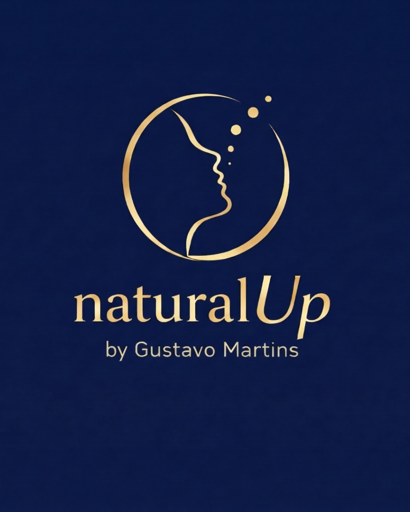
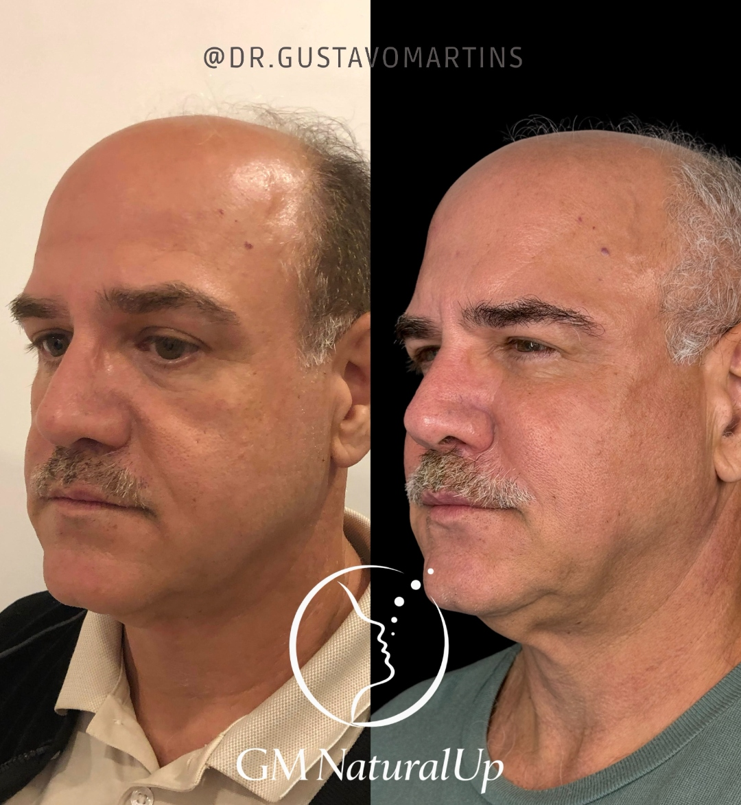
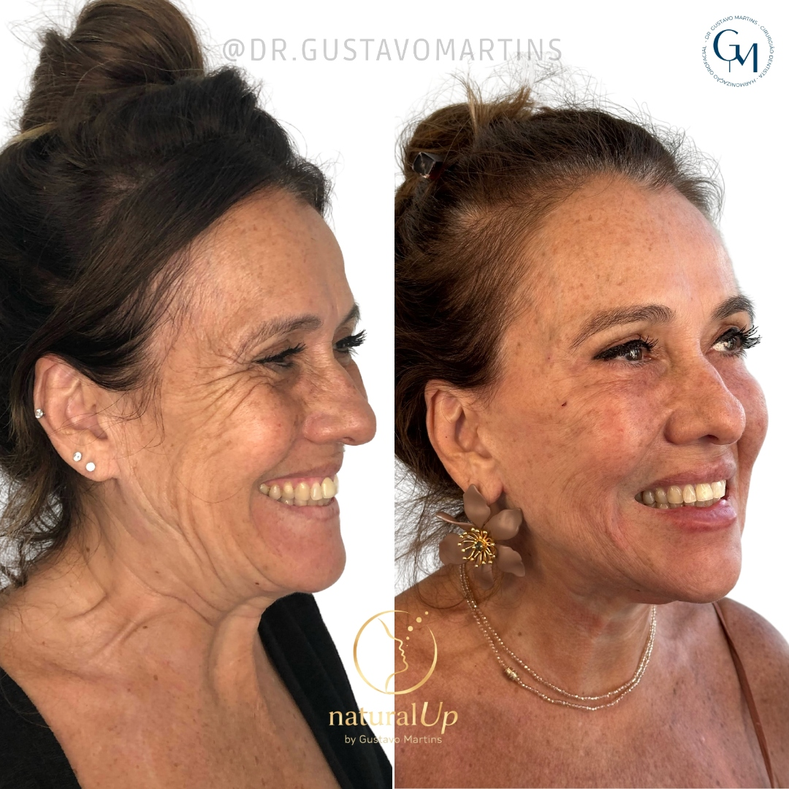
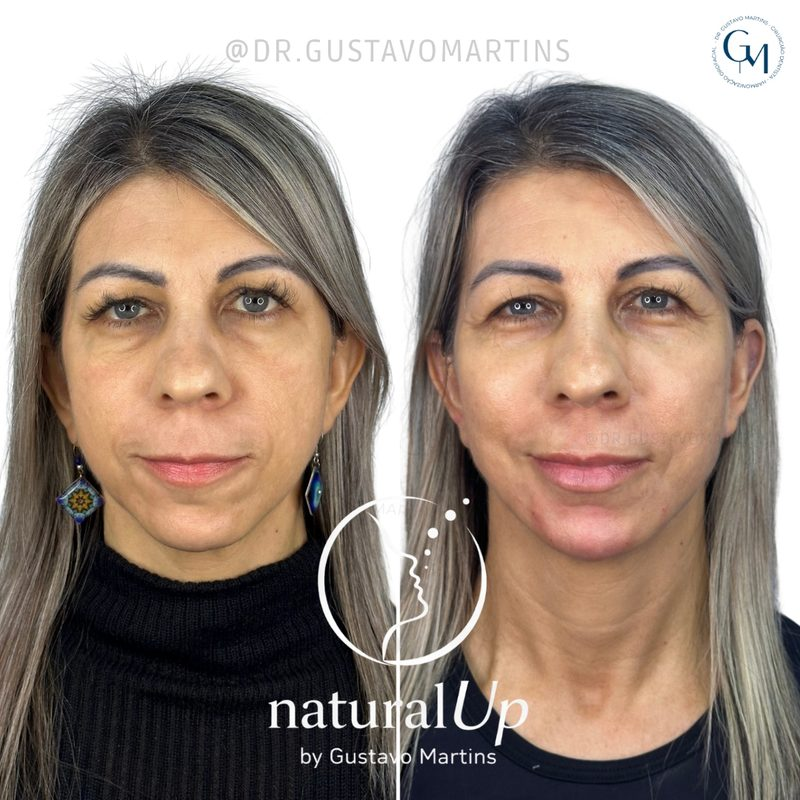
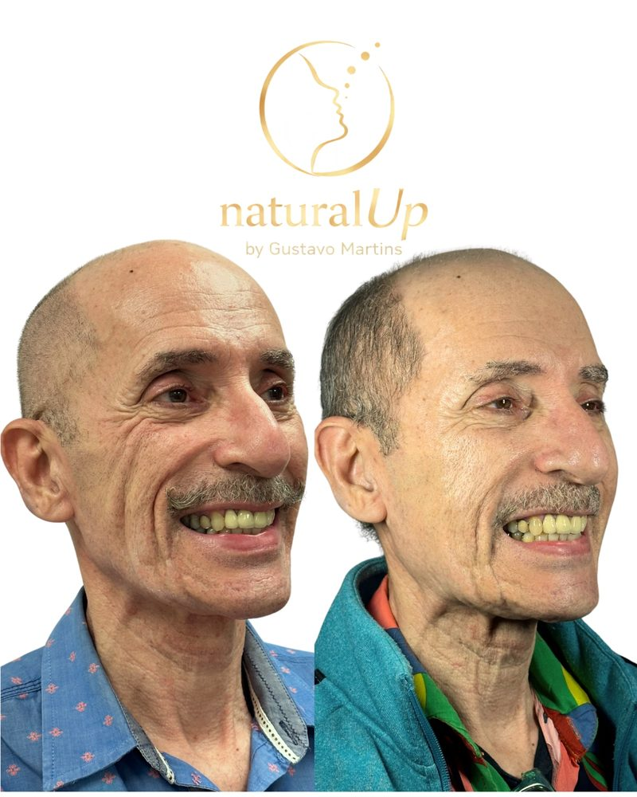
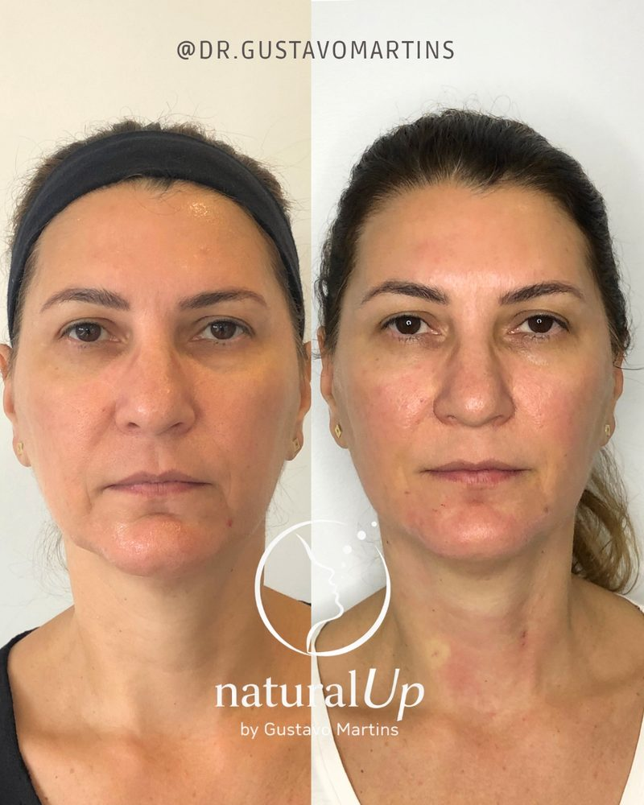

Ampla Facial | Acompanhamento VIP com Método NaturalUp®
Planejamento Evolutivo para Resultados de Longo Prazo

Rio de Janeiro, RJ

NaturalUp® | Planejamento evolutivo e otimização contínua da face ao longo do tempo.
Não é um protocolo. É uma filosofia de tratamento que transcende a correção pontual.
A formação em estética facial muitas vezes foca em técnicas isoladas, criando uma lacuna no raciocínio clínico profundo. O Ampla Facial muda isso.
A verdadeira autoridade clínica surge da compreensão profunda dos princípios de cada intervenção.
Cada caso é único. O planejamento evolutivo respeita a individualidade e entrega resultados naturais e duradouros.










Análise profunda da necessidade do paciente para identificar padrões de envelhecimento e alterações estruturais.
Criação de planos estratégicos, integrando procedimentos para resultados seguros e sustentáveis.
Como ter clareza na fala, explicar o plano de tratamento e converter em venda para o paciente.
Encontros quinzenais em turma, suporte individual direto com o Dr. Gustavo, e uma comunidade de profissionais comprometidos com a excelência clínica. Você não vai estar sozinho em nenhum momento.
Às quartas-feiras às 10h da manhã, semana sim, semana não. Não conseguiu participar ao vivo? Todos ficam gravados.
Análise crítica de diagnósticos, planos de tratamento e resultados, seus e dos colegas.
Discussão de abordagens terapêuticas para desenvolver pensamento crítico e autonomia clínica.
Acesso direto ao Dr. Gustavo por mensagem, a qualquer momento, durante toda a vigência do acompanhamento.
Conexão com profissionais que compartilham o mesmo nível de compromisso com a excelência clínica.
Além dos encontros em grupo, cada aluno tem um canal exclusivo e direto com o Dr. Gustavo Martins, a qualquer momento.
Acesso direto por mensagem, sem intermediários, sem espera.
Dúvidas sobre diagnóstico, planejamento ou conduta? Mande quando precisar.
Planeje cada caso do início ao fim com maestria e previsibilidade.
O fundamento teórico que sustenta toda a metodologia NaturalUp®, do básico ao avançado.
Todas as aulas disponíveis para assistir quantas vezes quiser, no seu ritmo, durante toda a vigência do acompanhamento.
Confira em detalhe o que cada modalidade inclui. As vagas são limitadas e a participação está sujeita a aprovação em processo seletivo.
| Entregáveis | Online | Presencial | CompletoRecomendado |
|---|---|---|---|
| Acompanhamento | |||
| Acompanhamento individual com Dr. Gustavo | 6 meses | 3 meses | 6 meses |
| Canal exclusivo e direto por mensagem | 6 meses | 3 meses | 6 meses |
| Suporte para dúvidas clínicas | 6 meses | 3 meses | 6 meses |
| Discussão de casos e orientação de condutas | 6 meses | 3 meses | 6 meses |
| Encontros Quinzenais (Online em Turma) | |||
| Participação nos encontros ao vivo | 6 meses | Não incluso | 6 meses |
| Acesso às gravações dos encontros | 6 meses | Não incluso | 6 meses |
| Networking com outros profissionais da turma | 6 meses | Não incluso | 6 meses |
| Atendimento Clínico Presencial (16h: 2 dias de 8h ou 4 dias de 4h) | |||
| Atendimento presencial na clínica (RJ) | Não incluso | 16h | 16h |
| Vivência prática clínica com pacientes reais | Não incluso | 16h | 16h |
| Supervisão direta do Dr. Gustavo no atendimento | Não incluso | 16h | 16h |
| Base Teórica (Aulas Gravadas) | |||
| Curso de Toxina Botulínica | 6 meses | 3 meses | 6 meses |
| Curso de Preenchedores Faciais | 6 meses | 3 meses | 6 meses |
| Curso de Bioestimuladores de Colágeno | 6 meses | 3 meses | 6 meses |
| Método NaturalUp® | |||
| Raciocínio clínico e diagnóstico facial | 6 meses | 3 meses | 6 meses |
| Planejamento terapêutico de longo prazo | 6 meses | 3 meses | 6 meses |
| Comunicação clara e técnicas de venda | 6 meses | 3 meses | 6 meses |
A verdadeira autoridade clínica surge da compreensão profunda dos princípios de cada intervenção.
Ampla Facial | Acompanhamento VIP com Método NaturalUp® by Dr. Gustavo Martins